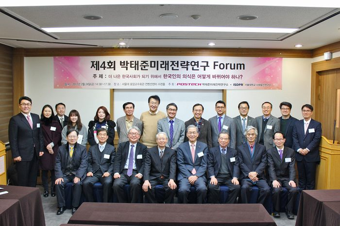
행사개요
행 사 명 : 제4회 박태준미래전략연구 포럼
주 제 : 더 나은 한국사회가 되기 위해서 한국인의 의식은 어떻게 바뀌어야 하나?
기 간 : 2017년 2월 24일 14:30 ~ 17:30
장 소 : 서울대학교 호암교수회관 컨벤션센터 수련홀
포스텍 박태준미래전략연구소에서는 제4회 박태준미래전략연구 포럼을 개최하였습니다.
지난해 더 나은 한국사회를 위한 시대적 상황에 대응하기 위해 '한국인의 의식은 어떻게 바뀌어야 하나?'라는 주제로 네 분의 저명학자께서 연구를 진행해 왔습니다.
이번 포럼에서는 더 희망찬 미래를 열어나가기 위해 우리 모두가 경청해야 할 귀중한 제언들이 나왔으며 앞으로도 박태준미래전략연구소에서는 이에 대한 실증적인 연구를 계속해 나갈 예정입니다 .
프로그램
2017-02-24
SESSION I
시간
프로그램
14:40~15:05
성찰적 의식: 이성과 존재
- 보다 나은 미래 사회를 위하여
김우창 명예교수(고려대)
15:05~15:30
시민민주주의의 미시적 기초
- 시민성, 共民, 그리고 복지
송호근 교수(서울대)
15:30~15:45
자유토론
SESSION II
시간
프로그램
16:00~16:25
한국인의 의식 전환: 두 가지 과제
송복 명예교수(연세대)
16:25~16:50
데이터로 본 한국인의 가치관
장덕진 교수(서울대)
16:50~17:30
자유토론 및 폐회사
연사
김우창
1937년 생. 미국 코넬대학교에서 영문학 석사학위, 하버드대학교에서 미국문명사 박사학위를 받음. 서울대학교 영문학과 전임강사, 고려대학교 영문학과 교수, 이화여자대학교 학술원 석좌교수, <세계의 문학> 편집위원, <비평>편집인 역임. 현재 고려대학교 명예교수, 저서로 '궁핍한 시대의 시인', '지상의 척도', '심미적 이성의 탐구', '풍경과 마음', '자유와 인간적인 삶', '정의와 정의의 조건', '깊은 마음의 생태학' 등이 있음, 역서로 '가을에 부쳐', '나, 후안 데 파레하' 등과 대담집 '세 걔의 동그라미' 등이 있음.
송호근
1956년 생. 미국 하버드대학에서 사회학 박사학위를 받음. 서울대학교 사회발전연구소장, 스탠퍼드대학교 방문교수, 캘리포니아대학교(샌디에이고) 초빙교수 역임. 현재 서울대학교 사회학과 교수. 저서로 '또 하나의 기적을 향한 짧은 시련', '의사들도 할말 있었다', '한국, 무슨 일이 일어나고 있나', '정치 없는 정치시대', '나타샤와 자작나무' 등이 있고, 편저로 '세계화와 사회정책', '세계화와 복지국가', '한국, 어떤미래를 선택할 것인가', '독 안에서 별을 헤다', '인민의 탄생' 등이 있음.
송복
1937년 생. 서울대학교에서 정치사회학 박사학위를 받음. <사상계>기자, <청맥>편집장, 서울신문 외신부 기자, 한국간행물윤리위원회 서평위원, 연세대학교 사회학과 교수 역임. 현재 연세대학교 명예교수. 주요 저서 '조직과 권력','사회불평등 기능론' '사회불평등 갈등론' '볼셰비키 혁명' '열린사회와 보수 ' '한국사회의 갈등구조' '류성룡, 서애 류성룡 위대한 만남' '특혜와 책임' 등이 있음.
장덕진
1966년 생. 미국 시카고대학교에서 사회학 박사학위를 받음. 2013 학국사회학회 논문상, 2009 OECD World Forum Best Paper Award, 2006 한국사회학회 논문상 수상. 현재 서울대학교 사회학과 교수, 서울대학교 사회발전연구소장. 공저로 '유로존 경제위기의 사회적 기원', '압축성장의 고고학: 사회조사로 본 한국 사회의 변화, 1965~2015', '노무현 정부의 실험: 미완의 개혁'등이 있음.
참석자
⊙ 초청인사: 김도연 총장(포항공과대학교)외 사회학자 다수
⊙ 포스텍 박태준미래전략연구소 위원 : 조윤제교수 외 12명
⊙ 전국 대학 사회학과 교수 및 사회학회 회원
⊙ 학생 및 연구원
내용
좋은 질서는 정치와 경제를 포함하면서, 인간성 실현의 요구에 답하는 것이라야 한다. 이 실현의 가능성에 대한 생각을 그 무정형의 전체 속에 포함하고 있는 것이 문화라고 할 수 있다. 사실 정치나 경제의 의의 그리고 정당성은 이 세 번째의 요청에 대응하는 데에서 찾아진다. 인간성의 요청 또는 인간성에 대한 이해를 이미 이루어진 대로 내장하고 있는 삶의 근본적 틀이 문화이다. 경제나 정치는 그 틀 안에서 행해지는 인간행위이다. - 김우창
지난 세기 60년대 이래의 첫 30년은 ‘적나라한 물리력’에 기초한 ‘강력한 리더십’이 ‘역사의 동력’이 되어 유례에 없는 산업화를 성취했다. 지난 세기 90년대 이래의 민주화시대 첫 30년, 지금 우리가 살고 있는 이 시대의 ‘역사의 동력’은 무엇인가. 국민들은 아직도 산업화시대 성공모델의 관성에 젖어, 대통령 1인의 빼어난 능력이나 정치력 등의 리더십에 기대고 있다. 그러나 그 시대는 다시 오지 않는다. ‘역사는 반복한다’ 하지만 재현되지는 않는다. 이제 우리가 만들어내야 할 새 ‘역사의 동력’은 바로 노블레스 오블리주다. - 송 복
시민성과 공민을 말하는 데에 왜 갑자기 사회민주화와 복지정치인가? 시민성(공민)은 사회민주화(복지정치)의 전제이고, 사회민주화는 시민성을 강화하는 토양이기 때문이다. 두 가지는 서로 상보적이며 인과관계에 있다. 사회민주화는 정치민주화와 함께 진행되기도 하고 후속 단계에 나타나기도 한다. 정치민주화가 권위주의 내지 독재정권의 잔재를 청산하고 민주적 정치제도를 도입하는 일련의 과정을 뜻한다면, 사회민주화의 초점은 불평등해소와 격차 줄이기다. - 송호근
최종적으로는 정치의 창조적 가능성을 인정하고 참여해야 한다. 한국사회에 만연한 정치혐오가 아수라 같은 오늘을 만들었다. 정치를 혐오하는 것은 대표자가 아닌 지배자에게 우리의 운명을 맡기는 것이다. 설사 선한 지배자라 하더라도 그를 믿어서는 안 된다. 악한 지배자도 선한 대표자처럼 행동할 수밖에 없게 만드는 시스템을 만들어야 한다. 슈톰카의 말처럼 민주주의는 불신의 제도화를 통해 신뢰를 만들어낸다. - 장덕진

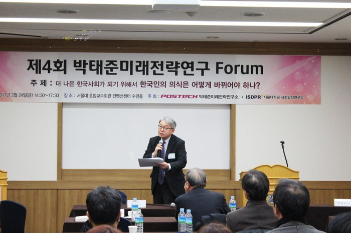
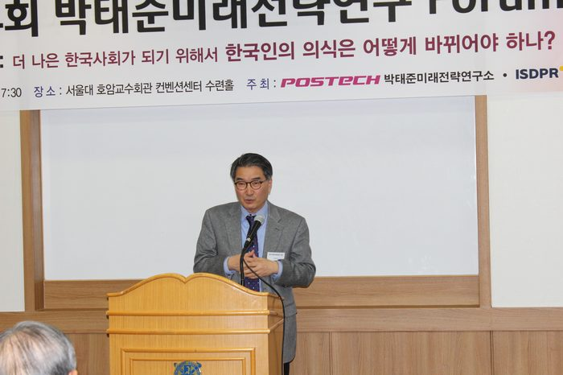
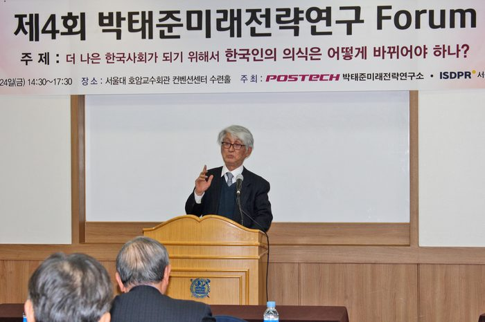
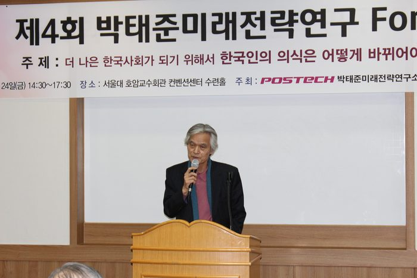
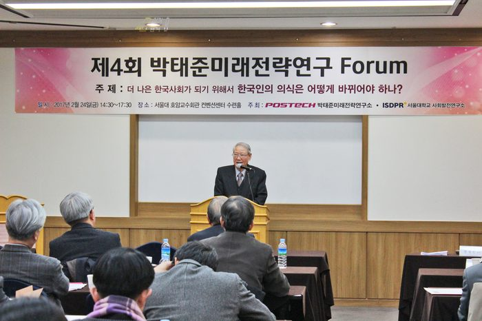
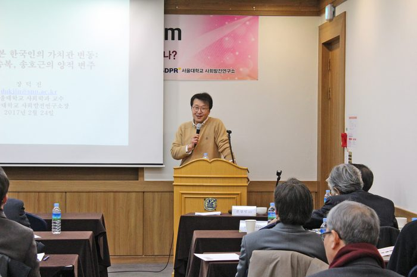
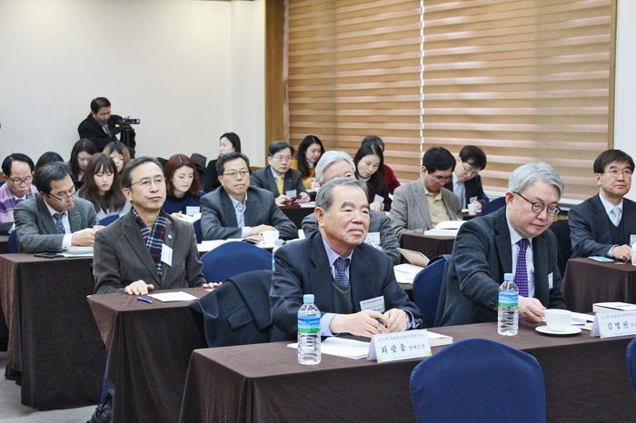
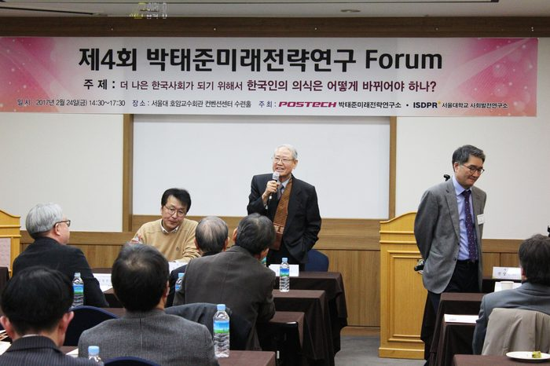
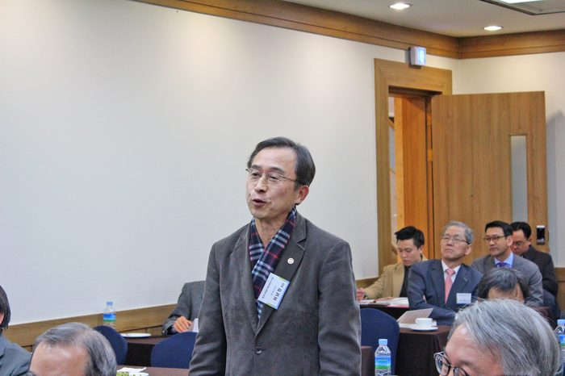
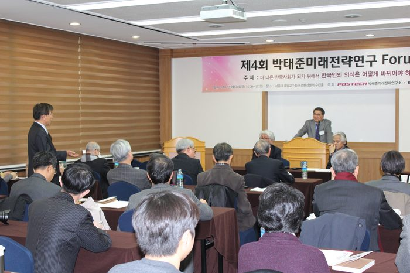
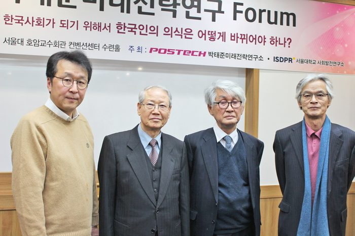